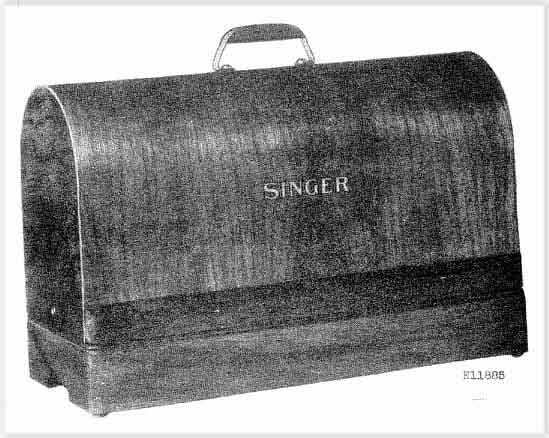

Singer Portable Cases
C06
Set No. 194
for Nos.15, 66, 115, 127 &
201 Machines

© Helen Scarth 2002. All Rights
Reserved
This web page or any portion of it
may not be reproduced in any form without the prior written permission of the
copyright holder